指揮與樂團核心

6301 民國 63 年入學
陳錫仁
小號演奏家．校友聯演指揮
1978年畢業於嘉義高中，1983年畢業於國立臺灣師範大學音樂系，1991年取得美國聖保羅大學小號演奏碩士。當屆社長、小號聲部，1990年代初創立台灣銅管五重奏團，著有五本中文小號教材，長期任教中臺科技大學。曾在東海大學指導曾膺安，並多次回到聯演舞台。
6401 民國 64 年入學
馮朝君
嘉義城市管樂推手．前校友團團長
嘉中管樂隊校友，1983年退伍後返回母隊指導學弟。1993年統籌首屆嘉義市管樂節曲目，1994年任嘉義市青少年管樂團創團執行秘書，後長期擔任嘉義市管樂團行政總監。2008年協助校友團立案，2009年出任團長，被媒體稱為「嘉義市管樂之父」。
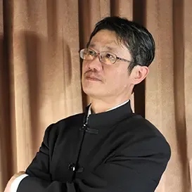
6951 民國 69 年入學
曾膺安
嘉義市管樂團藝術總監暨常任指揮
嘉義梅山人，蘭潭國中與嘉中管樂隊時期主修小號，東海大學音樂系師事陳錫仁等教師，輔仁大學音樂研究所指揮組第一名入學。自1994年嘉義市管樂團創立即任藝術總監逾30年，率團巡迴全國22縣市及海外多地演出，並長期指導北興國中管樂班。

7111 民國 71 年入學
盧宓承
嘉義高中校友管樂團團長
綽號「咪咪學長」，國立中正大學資訊管理博士，現任教於雲林縣立蔦松藝術高中。長期擔任嘉中校友聯演核心指揮，參與2015、2017、2019與2023年多屆演出，並指導嘉義縣嘉新國中管樂團，現任嘉義高中校友管樂團團長。
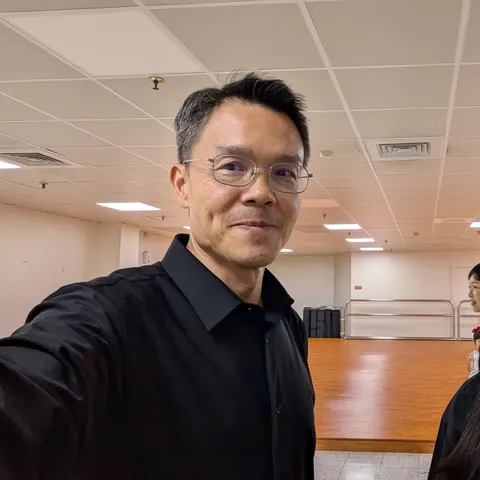
7581 民國 75 年入學
翁啟榮
低音號．校友聯演統籌
綽號「警伯」，民國75年入隊，一次校園招募展開四十年低音號人生。1990年代往返桃園與嘉義協助母隊帶團，現職警務人員，亦為嘉義市管樂團低音號團員。長期投入校友聯演行政，歷任第33屆召集人、第38屆《一樹起響》籌備統籌。

8431 民國 84 年入學
鄭鈞元
薩克斯風演奏家．南華大學講師
嘉義市人，1995年進入嘉義高中管樂社主修薩克斯風，國立臺灣藝術大學音樂系畢業。2006年赴法國馬爾梅松音樂院深造，取得薩克斯風與室內樂高級演奏文憑。曾於2007年第23屆聯演獨奏、2013年第29屆聯演擔任指揮，現任南華大學講師、嘉義市管樂團薩克斯風首席。

8501 民國 85 年入學
丁肇賢
校友聯演統籌．指揮
民國85年入學，當屆社長，主修低音號。國立臺灣師範大學音樂研究所指揮組畢業。2007年與林唐禾共同指揮第23屆聯演，2008年與簡晟軒共同指揮第24屆，2023年再與盧宓承、簡晟軒共同指揮《旭陵慶典》。長期指導淡江大學等校管樂團，現任台北音樂家管弦樂團常任指揮。
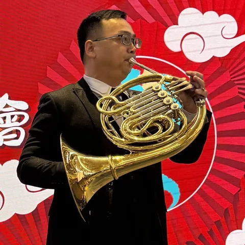
8841 民國 88 年入學
魏仕杰
法國號．校友聯演總召
民國88年入學，法國號聲部，曾任總務幹部。長期支援校友聯演演奏與團務，2019年第35屆《正八音》擔任總召，協調八字頭校友籌辦嘉中樹人堂與北港文化中心兩場演出。嘉義市管樂團公開歷任團員資料亦列於法國號聲部，是在台前演奏與幕後行政之間延續傳承的重要校友。

8861 民國 88 年入學
簡晟軒
在校生管樂隊指導老師．長號演奏家
出身嘉義縣新港，1999年進入嘉中管樂隊，啟蒙於宋光清與高崇文老師。國立高雄師範大學音樂學系暨研究所指揮組畢業，赴德國萊比錫取得長號演奏文憑。2012年參與創立嘉頌重奏團，現為副團長；2025年與東京佼成管樂團合作錄製臺灣作品，是近年聯演核心指揮。
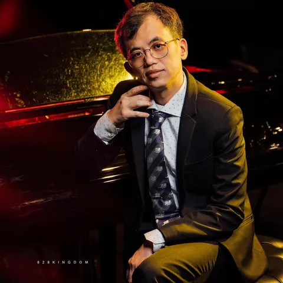
8982 民國 89 年入學
王騰寬
鋼琴合作藝術家．樂團行政與管樂連結
嘉中音樂班與管樂隊校友，學生時期由低音號聲部進入管樂團生活，也曾投入校友音樂會籌備。赴美取得鋼琴合作藝術博士後返臺任教，並曾擔任台北青年管樂團樂團經理與室內樂召集人。從鋼琴合作、數位聲音到樂團行政，持續以不同方式連結管樂現場。
8993 民國 89 年入學
林唐禾
指揮家．臺大杏林管弦樂團指揮
嘉義縣出身，嘉中音樂班主修小提琴，嘉中管樂隊主修打擊並擔任學生指揮，2001年隨隊赴日本濱松管樂節交流。國立臺北教育大學音樂系、臺灣師範大學音樂研究所指揮組畢業。2007年與丁肇賢共同指揮第23屆聯演，自2013年起長期擔任臺大杏林管弦樂團指揮。
聯演舞台上的靈魂人物
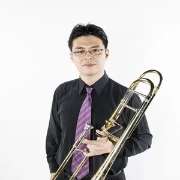
8301 民國 83 年入學
高崇文
長號演奏家．音樂班教師
阿里山鄒族校友，國立臺北藝術大學音樂碩士。1999年台灣區音樂比賽長號獨奏成人組第一名，2004至2014年任高雄市交響樂團長號專任團員。現任教多校音樂班，並任台灣獨奏家交響樂團、高雄市管樂團、台南市交響樂團長號演奏員，也是簡晟軒在嘉中的啟蒙老師之一。
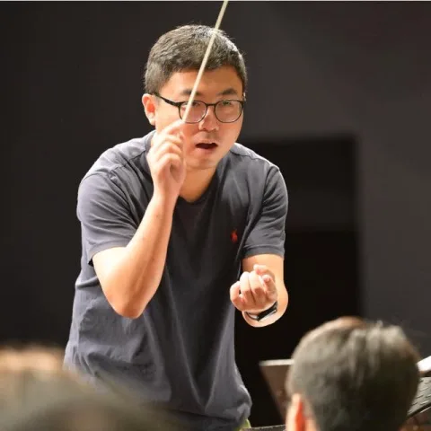
9261 民國 92 年入學
方崇任
長號演奏．音樂教育
民國92年入學，長號聲部。東吳大學音樂系、臺師大音樂研究所出身，曾於第26屆《Music à la Carte》擔任長號獨奏；公開資料亦列其於臺北市立交響樂團附設團長號聲部。從校友聯演舞台到職業樂團與教學現場，呈現嘉中長號校友回到母校分享專業聲音的路徑。
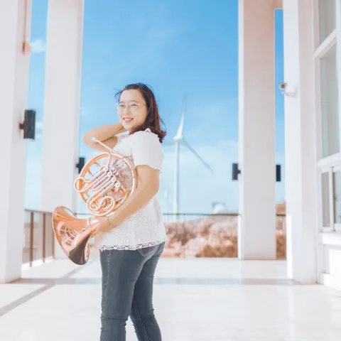
9841 民國 98 年入學
洪筱涵
法國號演奏家．校友聯演協奏
民國98年入學，法國號聲部。嘉義大學音樂系主修法國號、副修鋼琴，曾任國立臺灣交響樂團附設青年交響樂團團員，現為 NTSO 臺灣管樂團法國號團員。2019年第35屆《正八音》擔任法國號協奏獨奏，與校友團合作理查．史特勞斯《第一號法國號協奏曲》第一樂章。
8912 民國 89 年入學
黃耀瑩
雙簧管獨奏．音樂教育
民國89年入學，主要樂器為雙簧管。曾就讀高師大音樂系暨研究所，參與雙簧管獨奏、比賽與交響樂團演出；2008年第24屆《管樂肖像》擔任雙簧管獨奏者，演出James Barnes《Autumn Soliloquy》。後續亦曾在嘉義縣表演藝術中心舉行個人音樂會並投入教學。

9161 民國 91 年入學
王聖安
音樂教育．諮商心理
民國91年入學，長號聲部。大學主修鋼琴、副修長號，後取得臺大音樂學研究所與嘉大輔導諮商碩士；曾在校友聯演中擔任雙鋼琴協奏與鋼琴演奏。公開資料列有嘉北國小音樂教師與資料組長職務，並於2025年通過諮商心理師國家考試。
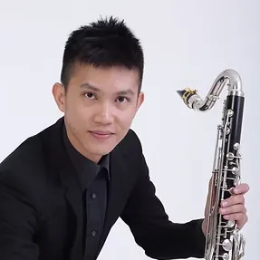
9101 民國 91 年入學
謝介豪
單簧管演奏家．BON 重奏團團長
嘉中管樂社社長，由李吉峰老師啟蒙開始學習單簧管。國立臺灣藝術大學音樂系畢業，在學期間任音樂系管樂團單簧管首席；後取得臺北藝術大學管絃與擊樂研究所碩士。2011年與嘉中校友團於世界管樂年會協奏，2013年起擔任BON單簧管重奏團團長，現任富瑜室內樂團單簧管首席。
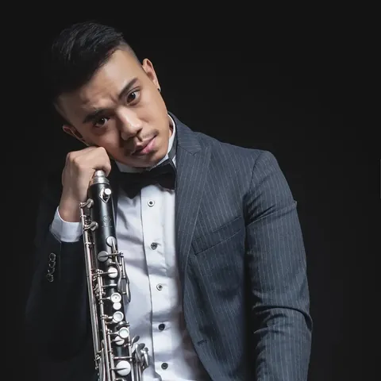
9721 民國 97 年入學
葉哲良
作曲家．編曲人
嘉義地區出身，嘉中管樂隊單簧管手，先後於臺南大學、臺灣藝術大學及臺北藝術大學音樂研究所進修。現為嘉義市管樂團單簧管團員暨駐團編曲家，2023年將神棍樂團歌曲改編為管樂版本，並為嘉中百年校慶創作管樂曲《旭陵慶典》，以校歌作為創作元素。
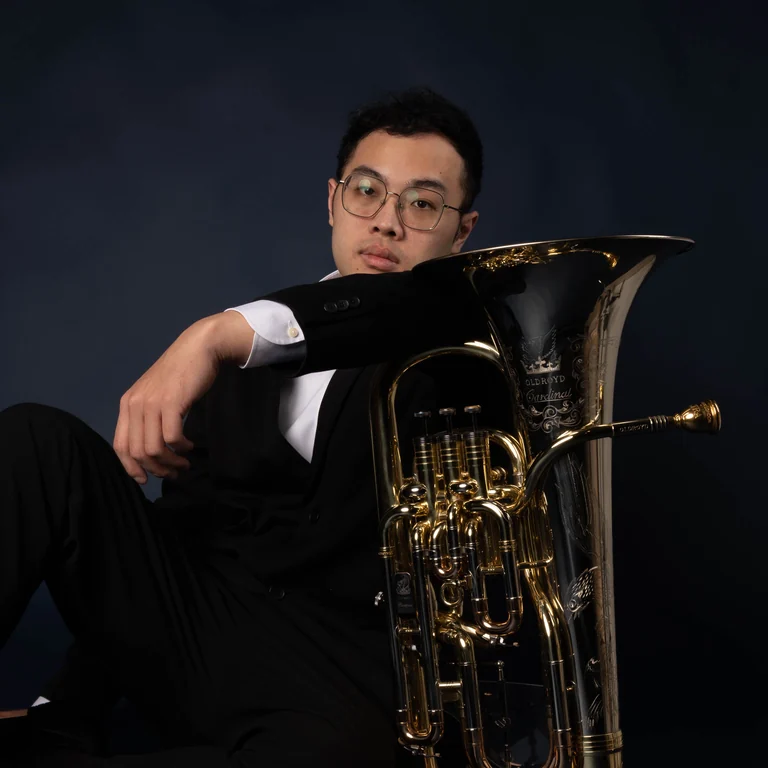
0271 民國 102 年入學
莊宗儒
上低音號演奏家
嘉義人，民國102年入學，主修上低音號，畢業於國立臺北藝術大學管絃與擊樂研究所。曾隨北教大管樂團赴芝加哥交流，現為多個低音銅管團隊成員，並任嘉中管樂社指導老師。2022年第37屆聯演擔任獨奏者，2025年出任台灣上低音號音樂節總召集人。
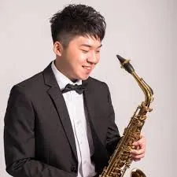
0431 民國 104 年入學
許哲誠
薩克斯風演奏家
嘉義市人，國立嘉義高中音樂班畢業，嘉中階段師事鄭鈞元。國立中山大學音樂系主修薩克斯風，曾獲全國學生音樂比賽大專組薩克斯風獨奏特優第四名、第二名。2021年獲Vincent David線上大師班指導，2022年錄取法國克拉瑪音樂院，現於中山大學研究所進修並參與南風四重奏。
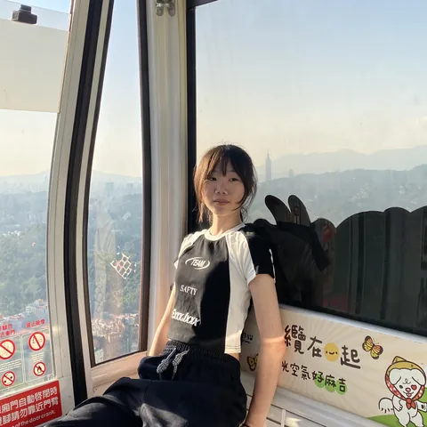
1051 民國 110 年入學
黃鈺芠
小號．《為伍》協奏
民國110年入學，小號聲部，現就讀臺北市立大學音樂系。曾就讀北興國中管樂班，2019、2020年管樂節公開演出均列小號聲部；2022年代表嘉中參加小號獨奏。2023年參與《旭陵慶典》首演，2026年第41屆《為伍》將擔任小號協奏。
職業演奏家與音樂教師
6703 民國 67 年入學
邱碩堯
耳鼻喉科醫師．男高音
民國67年入學，單簧管聲部，曾任學生指揮。臺大醫學系畢業後接受耳鼻喉科訓練，長期於嘉義行醫；音樂上則持續投入男高音演唱、合唱指導與聲樂推廣。2025年出版詩詞作品集《流水十年間》，展現從管樂、醫療到文字創作的寬廣生命經驗。
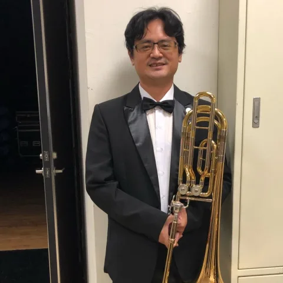
7901 民國 79 年入學
高健雄
長號演奏．管樂教育
民國79年入學，長號聲部，曾任管樂隊隊長。國立中山大學音樂系畢業後，長期投入嘉義地區音樂班、學生管樂團與銅管分部教學，也以指揮身分協助學生樂團。身為鄒族音樂家高一生之孫，亦透過長號與家族作品演出延續地方與族群音樂記憶。
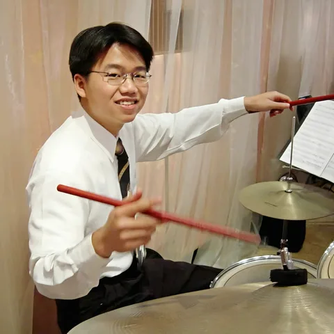
8302 民國 83 年入學
鄧杰翔
打擊樂．嘉義市管樂團行政總監
當屆副社長、打擊聲部，國立中正大學物理學系畢業。1995年起加入嘉義市管樂團，歷任團員、總幹事與助理指揮；曾任陸軍樂隊分隊長、副隊長。2023年與曾膺安、簡晟軒共同指揮並製作《魔幻樂神降臨》，同年接任嘉義市管樂團行政總監，並投入偏鄉管樂教育。
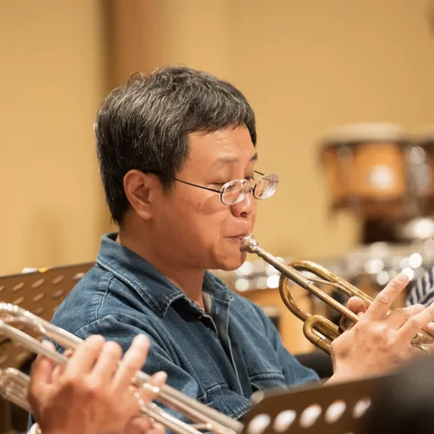
8401 民國 84 年入學
楊秉驊
小號．樂器維修技師
民國84年入學，小號聲部，曾任社長。嘉義市管樂團公開資料將其列於小號聲部，近年參與國際管樂節開幕、跨界音樂會與30週年製作；舞台之外，他也以樂器維修技師身分支援音樂營與管樂社群，從演奏與維修兩端守護合奏聲音，也讓演出前後的器材需求更安心。
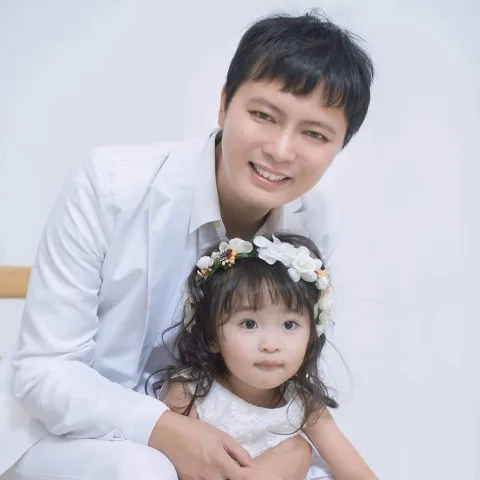
8991 民國 89 年入學
陳英杰
打擊樂教師．杰斯打擊教育系統
民國89年入學，打擊聲部。中正大學畢業後，曾參與嘉義市管樂團、青年管樂團與地方樂團演出，並長期投入學校打擊分部與爵士鼓教學。現以杰斯打擊教育系統創辦人身分推動嘉義、雲林地區節奏教育，2025年受邀擔任嘉義市新聲徵選評審。
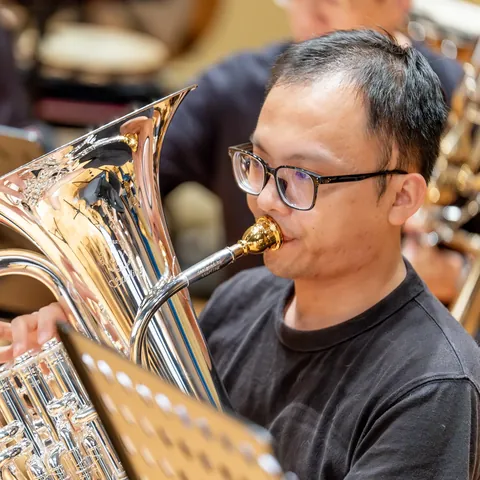
9701 民國 97 年入學
蔡政岳
長號演奏家．低音銅管教師
當屆社長、長號聲部，2009年嘉義市管樂節報導已稱其為嘉中管樂隊長號手，2011年正式加入嘉義市管樂團。國立高雄師範大學音樂研究所長號演奏碩士，2019年舉行獨奏會。現為NTSO臺灣管樂團、高雄市管樂團團員，並長年於嘉義、雲林多所學校指導長號與低音銅管。
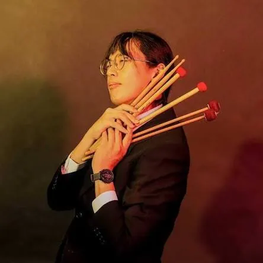
9921 民國 99 年入學
劉炫廷
多樂器演奏．編曲製譜
民國99年入學，單簧管聲部。公開紀錄顯示，他曾在第38屆《一樹起響》擔任雙簧管，並於嘉義市管樂團列為打擊樂器團員，也能在跨界演出中擔任爵士鼓。除演奏外，他投入管樂編曲、製譜、影像剪輯與視覺內容製作，是跨聲部、跨媒材參與樂團的年輕校友。
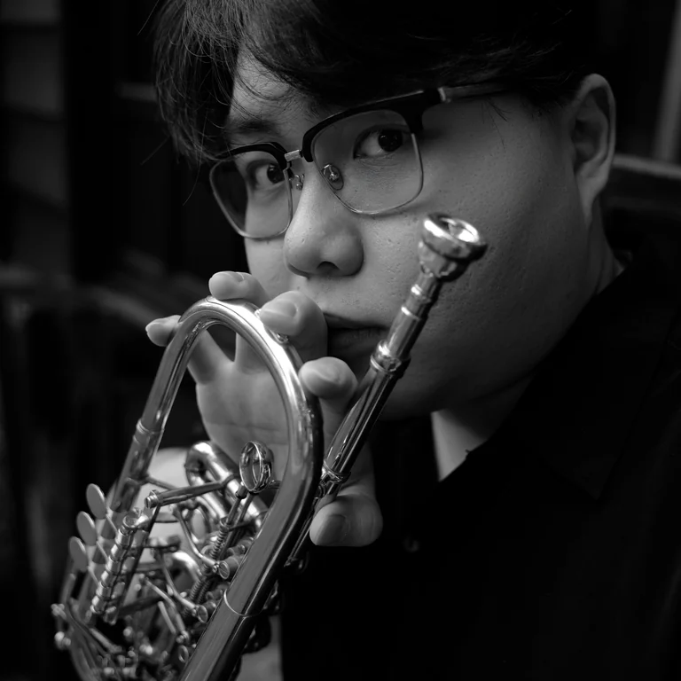
民國 107 年入學
林少凡
小號演奏．音樂研究生
民國107年入學，小號聲部。嘉中時期曾參與小號四重奏與旭陵精英協奏曲大賽，畢業後進入屏東大學音樂系，兩度於屏東縣學生音樂比賽大專小號獨奏獲優等。近年演出經驗延伸至衛武營歌劇《羅恩格林》舞台樂隊與棒球應援，現就讀北教大音樂系碩士班。
傳奇校友
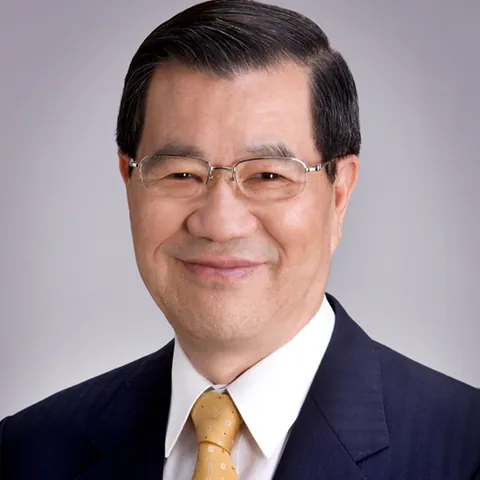
蕭萬長
前副總統
1939年生於嘉義市，嘉義中學畢業，學生時期是管樂隊鼓手，政治大學外交系畢業。歷任經濟部長、行政院大陸委員會主委、經建會主委，1997至2000年出任行政院院長；2008至2012年任中華民國第十二任副總統。2024年嘉中百年校慶亦親臨慶祝大會，與百年管樂傳統再續前緣。
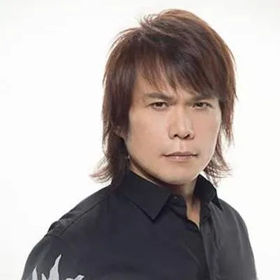
7202 民國 72 年入學．TUBA
伍佰（吳俊霖）
創作歌手．搖滾巨星
1968年生於嘉義六腳蒜頭村，本名吳俊霖，先後就讀太保國中與嘉義高中，高中時期擔任樂隊副隊長，主修低音號。大學聯考後投入音樂發展，1992年發行首張個人專輯，同年組成「伍佰&China Blue」。畢業後多年仍回母校參與校友演奏會，甚至曾帶著自己的樂團暖場，不忘校友情誼。
這份名單並非全部——歷屆聯演背後，還有無數校友默默投入行政聯繫、譜務整理、場務執行、宣傳設計與後勤支援。正是這些橫跨世代、分散各地的嘉中管樂人共同努力，才讓這項傳統延續超過四十年。本頁內容將持續增補。